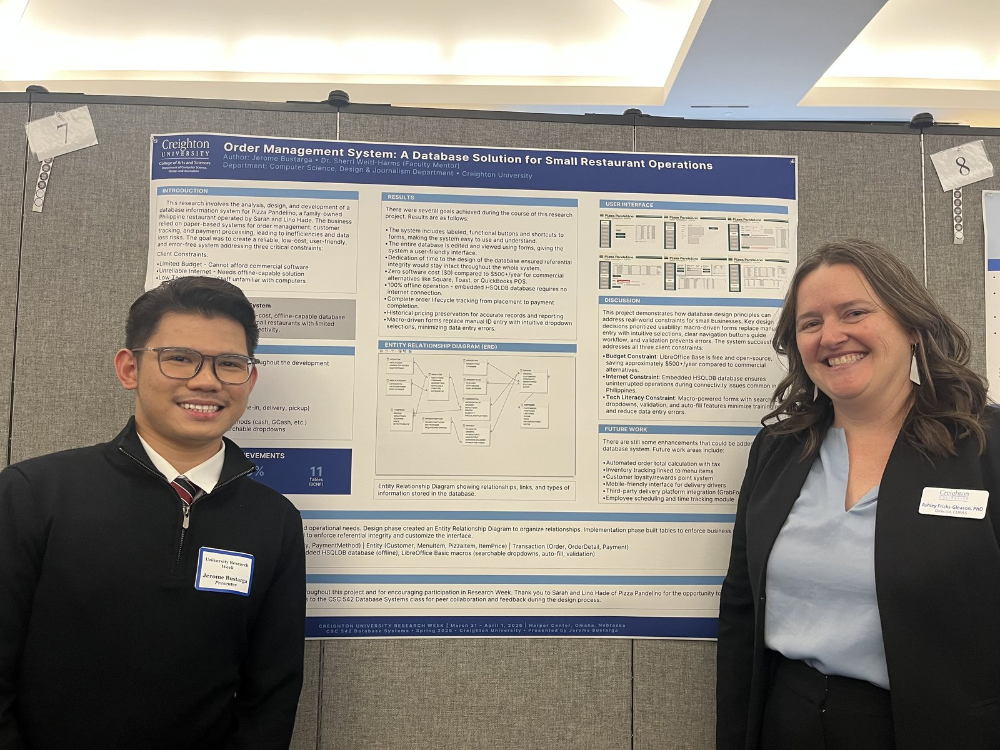
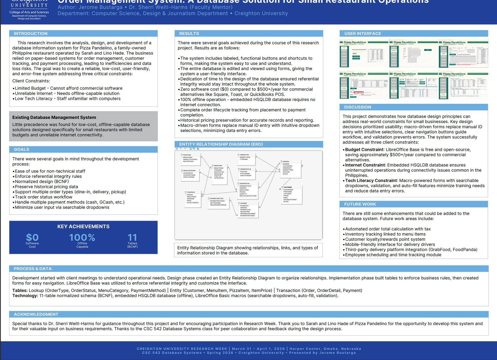
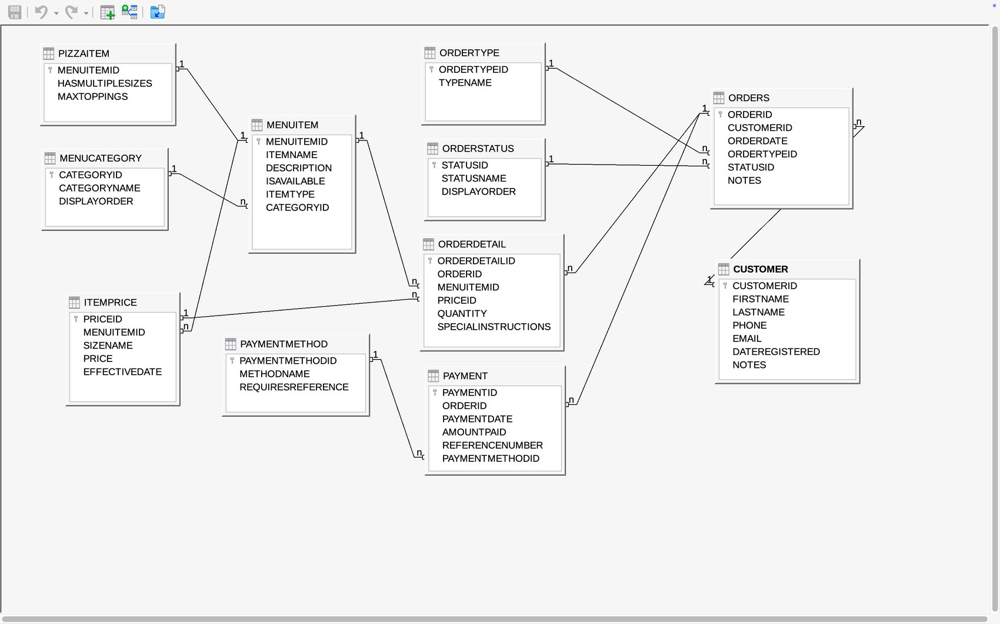
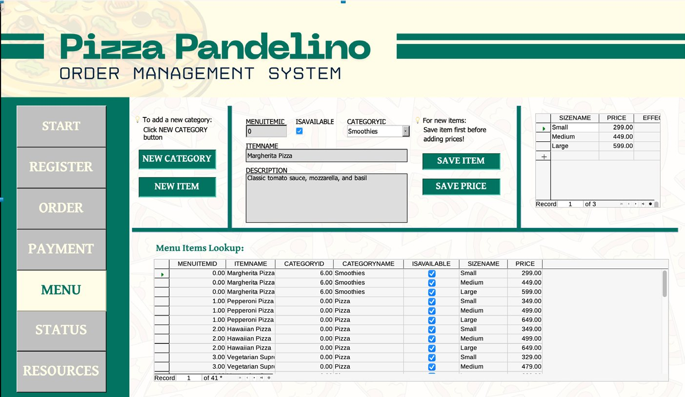
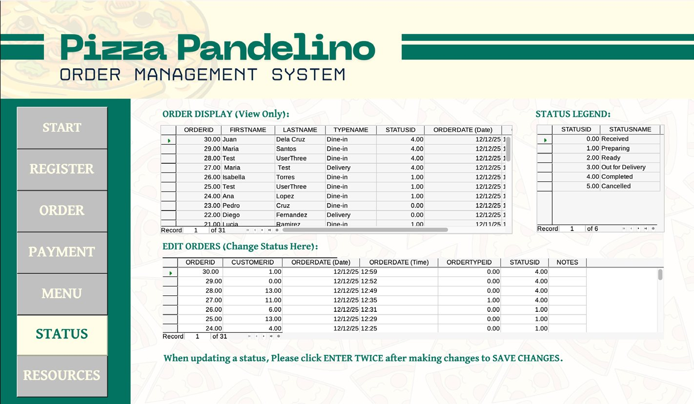

A relational database, normalized to BCNF, that runs the ordering, menu, pricing and payment operations of a family-run Philippine pizzeria — designed, built and documented end to end.

The system was presented at Creighton University Research Week, 31 March to 1 April 2026 at the Harper Center in Omaha, under the mentorship of Dr. Sherri Weitl-Harms, as part of CSC 542 Database Systems.

The restaurant took orders across several channels — walk-ins, phone calls and social media messages — and tracked them on paper and in staff memory. Three constraints shaped everything that followed:
Underneath those was a data problem: no single source of truth, pricing that could not be reconstructed after a change, and no record of customer allergies, preferences or repeat history.
Eleven tables in three functional layers. The layering is the mental model for the whole system: reference data at the bottom, the things the business owns in the middle, and the activity those things generate on top.
Rarely change. Keep categorical data consistent everywhere it is referenced.
OrderType · OrderStatus
MenuCategory · PaymentMethod
The nouns of the business. Referenced by transactions but exist independently.
Customer · MenuItem
PizzaItem · ItemPrice
Generated as customers order and pay. The high-volume, ever-growing tables.
Order · OrderDetail
Payment

These are the choices that make the schema more than a set of tables.
The schema is normalized to Boyce-Codd Normal Form: every determinant is a candidate key, which is a stricter condition than third normal form and rules out the anomalies 3NF still permits. In practice that means every non-key column depends on its table's key and nothing else. Statuses, categories, order types and payment methods are not repeated as free text across thousands of rows — they live once in lookup tables and are referenced by ID. Renaming "Preparing" to "In the oven" is a one-row update, not a find-and-replace.
Every product is a MenuItem, but pizzas carry attributes drinks do not — whether they come in multiple sizes, how many toppings are allowed. Rather than clutter MenuItem with pizza-only columns sitting empty for every beverage, those move to a PizzaItem table sharing MenuItem's primary key in a strict 1:1. It is the relational way of saying "a PizzaItem is a MenuItem, with more".
Prices do not live on MenuItem. They live in ItemPrice with a size and an effective date, so one item can have many price rows — Small, Medium, Large, and a full history as prices change. Raising a price is an insert, not an overwrite, so the old price is never lost.
Each order line stores the exact ItemPrice row that was charged. Even after menu prices change, an order placed last month still reflects last month's price. The order total is always reconstructable and always correct — which matters for anything that touches money.
Order source (walk-in, phone, Facebook, Instagram, other) is stored as a plain integer code rather than a foreign key to a twelfth lookup table, to respect a deliberate scope ceiling. The cost is that the code-to-label mapping lives in documentation instead of the database. Writing the trade-off down, rather than hiding it, is part of the design.
The schema is only half of it. The database is driven entirely through forms built in LibreOffice Base, with Basic macros providing searchable dropdowns, auto-fill and validation, so nobody has to type an ID by hand or remember what a foreign key is.


The payoff of a clean schema is that real business questions become short, reliable queries.
SELECT mi.ItemName, SUM(od.Quantity) AS UnitsSold
FROM OrderDetail od
JOIN MenuItem mi ON od.MenuItemID = mi.MenuItemID
GROUP BY mi.ItemName
ORDER BY UnitsSold DESC
FETCH FIRST 5 ROWS ONLY;Today's sales total, revenue by payment method, a single customer's full order history, and the current menu with active prices are all a join or two away.
Because each order line points at the price row that was actually charged, a sales report run today over orders from six months ago returns what the customer paid then — not what the item costs now.